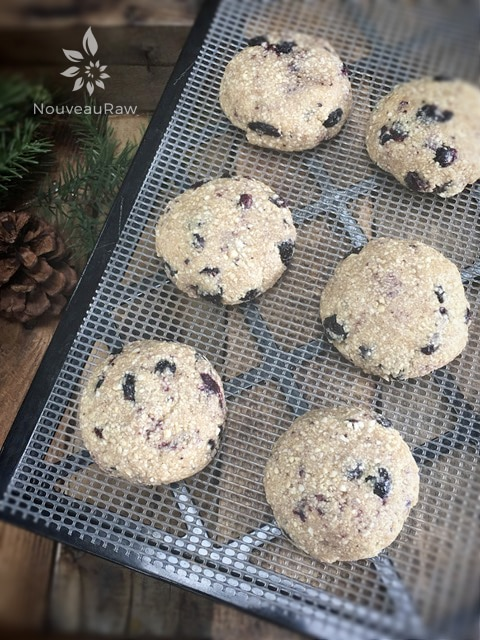
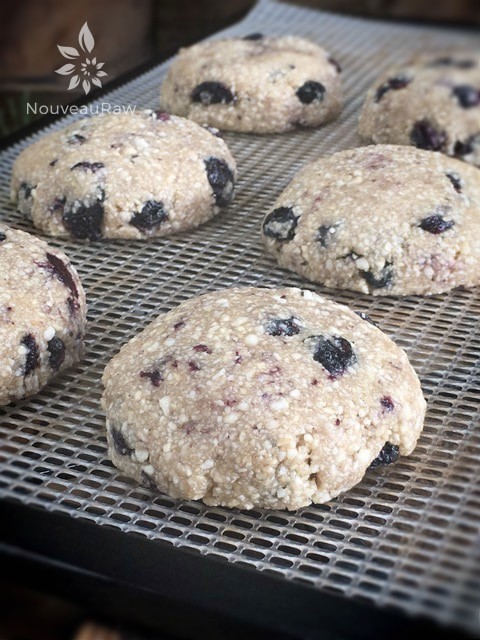

Blueberry Macadamia Nut Cookies

~ raw, vegan, gluten-free ~
Blueberry Macadamia Nut Cookies are yummmmmy! As I was creating this batter I couldn’t keep Bob out of it! It first started with a tiny taste test, which turned into spoonful after spoonful. :) I took half of the cookies and put a dollop of raw vanilla frosting on top, which was wonderful.
One thing that I love about this recipe is that it only has 2 tablespoons of sweetener added. I used maple syrup which isn’t raw but does have a set of health benefits. Other sweeteners may work as well. You will need to play around with them if you are feeling creative. :)
P.S. I have included a baking option for those of you who don’t own a dehydrator. You are still light years ahead of purchasing commercially processed cookies. So I am proud of you for being here. I do recommend in time that you invest in one as it will open up a whole new culinary world to you. :) I highly recommend the 9 tray Excalibur dehydrator.
I have made this recipe many times over and have collected some data that I wish to share. First of all, I used to have you process the blueberries in the batter. This created a “muddy” looking cookie because the blueberries made the cookies look grayer. Delicious but not totally appealing.
So, I have changed the instructions to where you hand blend in the dried blueberries. This created a more beautiful cookie in the end. Secondly, I wanted to share what to use if you don’t already have dried blueberries in the pantry. Dehydrating blueberries is a long process… and they can go from a raisin-like texture to pebbles if you don’t keep an eye on them.
You should also crack their skins to really help them dry appropriately. Well, I just so happened to have some fresh blueberries in the fridge, so I decided to par-dry them. This is a new technique so hang in there with me. :) I placed the blueberries on the mesh sheet that came with the dehydrator. I dried them at 145 degrees (F) for 1 hour, then reduced it to 115 degrees (F) for roughly 8-10 hours. I pulled them out before they were dry. This turned out perfect to use in the cookies, which you can see in the pictures. Make enough only for your cookies with this technique or use the extras right away in other recipes.
I hope you enjoy this recipe. Please be sure to comment below. Blessings, amie sue
Yield 8 (1/4 cup) cookies
- 2 cups raw macadamia nuts
- 1/4 tsp Himalayan pink salt
- 1/4 tsp ground Ceylon cinnamon
- 2 Tbsp maple syrup
- 1/2 tsp vanilla extract
- 1 cup dried blueberries
Preparation:
- Place the macadamia nuts, salt, and cinnamon in a food processor, fitted with the “S” blade. Process until the nuts resemble a small crumble.
- If you are short on macadamia nuts, you can use cashews in place of them. I have done it this way as well.
- Add the blueberries, sweetener, and vanilla. Process until the blueberries start to break down but you can still see specs of color from the macadamia nuts and berries.
- With a 1/4 cup scoop, place the cookie dough balls on a non-stick sheet. Lightly flatten with the palm of your hands.
- Poke a few extra whole blueberries on top and on the edges of the cookie. Place the cookies on the mesh sheet that comes with the dehydrator and dry at 145 degrees (F) for 1 hour, then reduce to 115 degrees (F) and continue to dry for 4-10 hours.
- Pull them out at any time. You get to decide on how moist you want them. I enjoy them the best at the 4-hour marker. They are semi-moist and chewy at this stage.
- Once cooled, store in airtight containers. One the counter, 1 week, fridge 2 weeks and 4 weeks in the freezer. These are rough estimated times due to moisture levels and the climate you live in.
Baking option:
- Preheat the oven to 350 degrees (F).
- Line a baking sheet with parchment paper and place the cookies at least 1” apart. These cookies won’t flatten while they cook, you will need to help them by slightly flattening them with your fingers.
- Bake for about 20 minutes. Often times ovens run at different temperatures regardless of what the dial says so please check in on the cookies about every 5 minutes for the first batch. Document the time it takes for the next tray or batch.
- The baked version darker considerably and had more of a roasted macadamia nut flavor. I preferred the texture and taste of the raw version but both are good.
Culinary Explanations:
- Why do I start the dehydrator at 145 degrees (F)? Click (here) to learn the reason behind this.
- When working with fresh ingredients it is important to taste test as you build a recipe. Learn why (here).
- Don’t own a dehydrator? Learn how to use your oven (here). I do however truly believe that it is a worthwhile investment. Click (here) to learn what I use.

Here they are ready for the dehydrator. They don’t puff up, expand, but they do turn a little tan, but not much.

© AmieSue.com